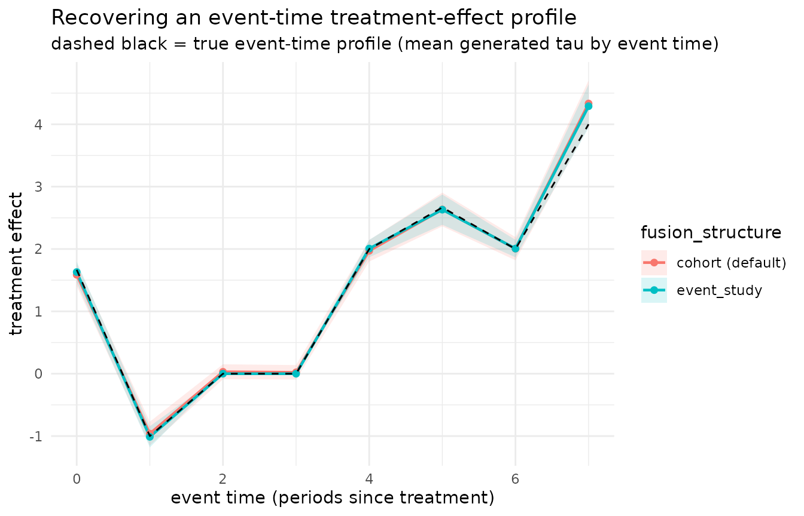

Choosing a fusion structure: cohort vs. event-study penalties
Gregory Faletto
2026-07-20
Source:vignettes/fusion_structure_vignette.Rmd
fusion_structure_vignette.RmdWhat a “fusion structure” is
FETWFE estimates a separate treatment effect for every treated cohort
g in every post-treatment period t — written
tau_{g, t} — and then shrinks those effects toward each
other with a fusion penalty. “Fusion” means the penalty acts on
the differences between selected pairs of treatment-effect
coefficients: pushing a difference toward zero pools the two effects, so
the estimator borrows strength across cells instead of estimating each
tau_{g, t} in isolation. Which differences the penalty acts
on is the fusion structure, and it encodes the kind of
similarity you expect the treatment effects to have.
Since version 1.19.0 fetwfe() exposes this choice
through a single argument, fusion_structure, with two
options:
fetwfe(..., fusion_structure = "cohort") # the default
fetwfe(..., fusion_structure = "event_study") # the alternative added for issue #40Both penalties are data-driven, not hard restrictions. The
estimator pools toward the chosen structure but is free to deviate from
it when the data demand it. So choosing a fusion structure does
not compromise the asymptotic validity of the estimator
(a lemma in the paper’s extensions section shows the event-study penalty
satisfies the same conditions, with the same singular-value constants
sigma_max <= sqrt(6) and
sigma_min >= 1 / (T * sqrt(2 * T)), as the default;
every consistency, restriction-selection, and inference guarantee in the
paper therefore holds verbatim for it). The cost of guessing “wrong” is
finite-sample efficiency — noisier estimates — not bias or
invalid confidence intervals.
fusion_structure = "cohort" (the default)
The default penalty fuses adjacent cohorts at the same calendar time and adjacent time periods within the same cohort. It pools toward the assumption that treatment effects vary smoothly across neighboring cohorts and smoothly over calendar time within a cohort. This is a sensible, agnostic default: it does not privilege any single summary of the effects.
fusion_structure = "event_study"
The event-study penalty instead fuses, for each event time
e = 0, 1, 2, ... (time since treatment), the effect
tau_{r, r + e} across all cohorts r. It pools
toward the assumption that treatment effects depend only on time
since treatment, not on the calendar period or the cohort — the
identifying restriction behind the standard event-study aggregation used
throughout applied difference-in-differences (e.g.,
did::aggte(type = "dynamic")). When the data really are
driven by event time (gradual onset, a dose-response that accumulates
with exposure), this pools strength across cohorts at each event time
and estimates the dynamic path more efficiently.
Two meanings of “event study” — read this first
The word “event study” appears in fetwfe in two
distinct, independent places, and conflating them is the most
common source of confusion:
-
fusion_structure = "event_study"is an estimation-time penalty. It changes the fit — the coefficients you get out offetwfe(). -
family = "event_study"ineventStudy()andsimultaneousCIs(fit, family = "event_study")is a reporting-time aggregation. It changes how an already-fitted set of effects is summarized (one number per event time), and does nothing to the fit.
These two choices are orthogonal: you can report an event-study aggregation of a cohort-penalized fit, or a cohort aggregation of an event-study-penalized fit. Every combination is valid:
# event-time SUMMARY of a default (cohort-penalized) fit:
eventStudy(fetwfe(..., fusion_structure = "cohort"))
# cohort SUMMARY of an event-study-penalized fit:
simultaneousCIs(fetwfe(..., fusion_structure = "event_study"), family = "cohort")The rest of this vignette uses eventStudy() (the
reporting aggregation) to display fits made under both
penalties — a concrete illustration of the orthogonality.
A side-by-side demo
We simulate a panel whose treatment effects are sparse in the
event-study basis — effects that share the same time since
treatment (event time e) are fused across cohorts, so the
true effect depends mostly on e. We generate this truth
natively with genCoefs(fusion_structure = "event_study")
(the simulation-side companion to the estimator argument), then fit the
panel with both fusion structures and see which recovers the truth
better. Because we know the data-generating effects exactly, we can
measure recovery error directly.
We use the package’s simulation utilities (genCoefs() /
simulateData() / fetwfeWithSimulatedData();
see the Simulation vignette for a full tour). The
treatment-effect coefficients occupy a known block of the coefficient
vector; fetwfe() reports their positions in its
treat_inds slot (see ?fetwfe), and those
positions depend only on the panel shape (G cohorts,
T periods, d covariates):
G <- 6L
T <- 9L
d <- 1L
N <- 400L
# Generate truth that is sparse in the event-study basis directly, with
# fusion_structure = "event_study". seed 10 is a representative draw (see the
# note after the plot); density 0.25 keeps the truth genuinely sparse in the
# event-study basis.
coefs <- genCoefs(
G = G, T = T, d = d, density = 0.25, eff_size = 2, seed = 10,
fusion_structure = "event_study"
)
# Locate the treatment-effect block tau_{g, t} (cohort-major order).
cohort_times <- getTes(coefs)$cohort_times # each cohort's first treated period
n_k <- T - cohort_times + 1 # number of post-treatment effects per cohort
num_treats <- sum(n_k)
base_cols <- G + (T - 1) + d + d * G + d * (T - 1) # fixed effects + covariate terms
# `fetwfe()` reports these positions as an integer vector, so build `treat_inds`
# as an integer too (the `base_cols` arithmetic above is double-typed) -- this
# keeps the `identical()` cross-check below exact rather than tripping on storage
# mode.
treat_inds <- as.integer(base_cols + seq_len(num_treats)) # the tau block
# Event time (time since treatment) of each tau, in the same order.
event_time <- unlist(lapply(n_k, function(nk) 0:(nk - 1)))
# The true per-cell treatment effects, generated natively (not hand-built).
true_te <- coefs$beta[treat_inds]
sim <- simulateData(coefs, N = N, sig_eps_sq = 1, sig_eps_c_sq = 0.5, seed = 10)Now fit the same simulated panel under each fusion structure:
fit_cohort <- fetwfeWithSimulatedData(sim, lambda_selection = "bic")
fit_event <- fetwfeWithSimulatedData(
sim,
lambda_selection = "bic",
fusion_structure = "event_study"
)
# The positions we wrote the truth to are exactly the ones fetwfe() reports as
# the treatment effects, so we can compare estimates to the truth cell by cell.
stopifnot(identical(treat_inds, fit_cohort$treat_inds))How well does each fit recover the true per-cell effects? Compare the estimated treatment-effect coefficients to the known truth (mean squared error over all 33 cells):
mse <- function(fit) mean((fit$beta_hat[treat_inds] - true_te)^2)
errs <- c(cohort = mse(fit_cohort), event_study = mse(fit_event))
round(errs, 3)
#> cohort event_study
#> 0.013 0.004On this panel the event-study penalty cuts the per-cell recovery error by about 67%. The advantage is exactly what we should expect: the truth is an event-study structure, so pooling effects across cohorts at each event time pools the right things, while the default penalty spends effort smoothing across cohorts and calendar time that the truth does not actually share.
The same story is visible at the reporting level. Below we aggregate
both fits to one effect per event time with
eventStudy() (the reporting family — applied here on top of
both penalties) and overlay the true profile:
library(ggplot2)
library(dplyr)
#>
#> Attaching package: 'dplyr'
#> The following objects are masked from 'package:stats':
#>
#> filter, lag
#> The following objects are masked from 'package:base':
#>
#> intersect, setdiff, setequal, union
profiles <- dplyr::bind_rows(
as.data.frame(eventStudy(fit_cohort)) |>
dplyr::mutate(structure = "cohort (default)"),
as.data.frame(eventStudy(fit_event)) |>
dplyr::mutate(structure = "event_study")
)
# True profile per event time: the mean of the natively generated tau at each
# event time (the truth is event-study-sparse, not a clean formula line).
truth <- aggregate(
estimate ~ event_time,
data = data.frame(event_time = event_time, estimate = true_te),
FUN = mean
)
ggplot(profiles, aes(event_time, estimate, color = structure, fill = structure)) +
geom_ribbon(aes(ymin = ci_low, ymax = ci_high), alpha = 0.15, color = NA) +
geom_line(linewidth = 0.8) +
geom_point(size = 1.6) +
geom_line(
data = truth, aes(event_time, estimate),
color = "black", linetype = "dashed", inherit.aes = FALSE
) +
labs(
title = "Recovering an event-time treatment-effect profile",
subtitle = "dashed black = true event-time profile (mean generated tau by event time)",
x = "event time (periods since treatment)",
y = "treatment effect",
color = "fusion_structure", fill = "fusion_structure"
) +
theme_minimal()
The event-study-penalized profile tracks the dashed truth more closely; the default profile lags, because its calendar-and-cohort smoothing pulls effects toward neighbors the truth does not actually share. (The exact magnitude — and, on any single draw, even the direction — depends on the simulated data: across event-study-sparse draws at this configuration the event-study penalty wins on roughly four out of five seeds, and it is the per-cell coefficient recovery above, not the aggregated profile, that captures that most reliably. The seed shown here is one representative such draw.)
When to prefer each
Prefer
fusion_structure = "event_study"when you believe treatment effects are driven mainly by time since treatment — a gradual onset, a build-up or decay of the effect over exposure — and you want to pool strength across cohorts at each event time. This matches the default null of the applied event-study literature, so the estimator’s “shrink toward an event-study structure” behavior is a familiar story to report.Prefer
fusion_structure = "cohort"(the default) when treatment effects plausibly differ by cohort — cohort-specific responsiveness, or calendar-time shocks that hit all cohorts in a given year — and you want smoothness across neighboring cohorts and within-cohort time without privileging an event-time summary. It is the right agnostic choice when you do not have a strong prior that event time is the only thing that matters.
Either way, the penalty is data-driven and the paper’s guarantees
hold for both, so the decision affects efficiency, not validity. If you
are unsure, the default is a safe starting point; switch to
"event_study" when the dynamic, time-since- treatment path
is the object of interest and you expect it to be shared across
cohorts.
Supplying your own fusion matrix D_N (advanced)
The two built-in structures are special cases of a more general
mechanism: under the hood, fetwfe() applies a
forward-differences matrix D_N to the
treatment-effect block, penalizes the differenced coordinates, and maps
back via solve(D_N). The fusion_matrix
argument lets you supply your own num_treats x num_treats
D_N directly — encoding an arbitrary
identifying-restriction structure (for example, “fuse cohorts that share
an industry”) that neither built-in expresses. When supplied,
fusion_matrix overrides
fusion_structure for the treatment-effect block (the
fixed-effect blocks are unchanged).
The row/column ordering
D_N is indexed by position, so its rows and columns must
follow the same cohort-major (g, t) order
the estimator uses for the treatment effects. Row/column i
corresponds to base treatment effect i:
-
num_treats = T * G - G * (G + 1) / 2is the total number of base treatment effects. -
getFirstInds(G, T)returns, for each cohortg, the 1-based row of its first effecttau_{g, 0}. Cohortgthen occupies rowsfirst_inds[g]:(first_inds[g + 1] - 1)(the last cohort runs throughnum_treats), ordered by event time within the cohort (tau_{g, 0}, tau_{g, 1}, ...). -
getTreatInds(G, T, d, num_treats)maps this block into the full design-matrix columns;fit$treat_indsreports the same positions on a fitted object.
Interpreting D_N as forward differences:
theta = D_N %*% beta is the penalized (sparse)
parameterization and beta = solve(D_N) %*% theta recovers
the original-scale effects. You supply D_N; the code uses
solve(D_N).
Worked example
We build first_inds from the per-cohort effect counts
n_k (already computed above; no internal helper needed) so
the matrix’s cohort-major layout is explicit, then supply a custom
D_N and refit. (This reuses the sim panel from
the side-by-side demo above.)
# first_inds in the same cohort-major order the matrix must follow: cohort 1
# starts at row 1, and each later cohort starts after the previous cohort's
# block (of size n_k).
first_inds <- cumsum(c(1, head(n_k, -1)))
first_inds # the 1-based starting row of each cohort's first effect
#> [1] 1 9 16 22 27 31
# A within-cohort backward-differences D_N: penalize each cohort's first effect
# directly (toward zero) and every later effect toward its within-cohort
# predecessor. (theta_i = beta_i - beta_{i-1} within a cohort; theta = beta at
# each cohort's first effect.) This is one transparent, hand-built example; any
# invertible num_treats x num_treats matrix in this row order is accepted.
D_N <- diag(num_treats)
for (k in seq_along(first_inds)) {
start <- first_inds[k]
end <- if (k < length(first_inds)) first_inds[k + 1] - 1 else num_treats
if (end > start) {
for (i in (start + 1):end) {
D_N[i, i - 1] <- -1
}
}
}
fit_custom <- fetwfeWithSimulatedData(
sim,
lambda_selection = "bic",
fusion_matrix = D_N
)
# A finite, well-formed fit; the custom block was used throughout.
fit_custom$att_hat
#> [1] 0.6717676A genuinely bespoke D_N — one that fuses your own set of
effects (for example, the event-study structure, or “fuse cohorts that
share an industry”) — is built the same way: choose which differences to
penalize, assemble the corresponding forward-differences matrix in this
cohort-major order, and pass it as fusion_matrix.
Staying inside the theoretical guarantees
Under the paper’s fixed-dimension scoping, the inferential guarantees
(valid standard errors and confidence intervals) hold for
any finite, invertible D_N: the theory
depends on D_N only through its invertibility and the size
of its singular values (Assumption (D) of Faletto 2025), and a fixed
invertible matrix automatically has its singular values in a fixed
positive range. Swapping one valid D_N for another changes
only constant factors, not the guarantees themselves — so you do not
need to engineer your D_N to hit particular singular-value
targets. Finite and invertible is enough.
fetwfe() enforces exactly that, and nothing stricter. It
stops when fusion_matrix is not a finite,
invertible numeric matrix of the exact
num_treats x num_treats dimension — a malformed restriction
matrix is a usage error, not a modeling choice. As a numerical courtesy
it also emits a warning() (not an error) when the supplied
D_N is near-singular: still invertible, so
estimation proceeds, but its inverse may be numerically unreliable,
which usually means a better-conditioned D_N would serve
you better.
# A near-singular (but invertible) D_N: estimation proceeds, with a heads-up.
near_singular <- diag(num_treats)
near_singular[1, 1] <- 1e-12
fit_warned <- tryCatch(
fetwfeWithSimulatedData(sim, lambda_selection = "bic", fusion_matrix = near_singular),
warning = function(w) conditionMessage(w)
)
# The warning message (estimation still succeeds if you allow the warning):
cat(fit_warned)
#> fusion_matrix is numerically near-singular (reciprocal condition number = 1e-12 < 1e-10). It is still invertible and yields a valid point estimator, but solve(fusion_matrix) may be numerically unreliable; consider a better-conditioned D_N.References
- Faletto, G. (2025). Fused Extended Two-Way Fixed Effects for Difference-in-Differences With Staggered Adoptions. arXiv preprint. https://arxiv.org/abs/2312.05985
- Callaway, B., & Sant’Anna, P. H. C. (2021). Difference-in-Differences with multiple time periods. Journal of Econometrics, 225(2), 200–230. https://doi.org/10.1016/j.jeconom.2020.12.001